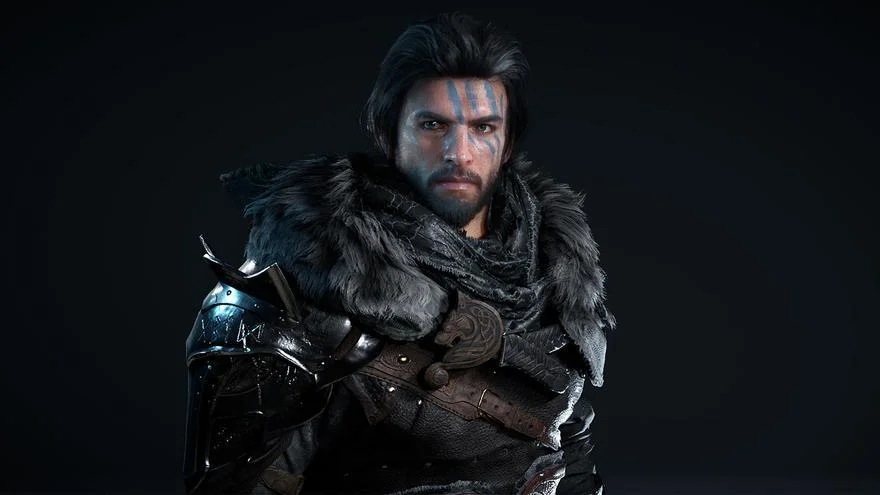

Nintendo Switch
Crimson Desert, el próximo gran RPG de acción
Desarrollado por Pearl Abyss, Crimson Desert ha capturado la atención de los jugadores por su propuesta de un vasto mundo abierto lleno de acción y narrativa. Este título de rol combina elementos de fantasía medieval con mecánicas de exploración y combate en tiempo real. Los jugadores asumirán el papel de Kliff, el líder de un grupo de mercenarios que lucha por sobrevivir en un mundo hostil. Aunque originalmente pensado para consolas de última generación, Crimson Desert llegará también a Nintendo Switch en 2025, marcando un nuevo estándar de ambición gráfica y jugable en la plataforma de Nintendo. Con opciones tanto para jugar en solitario como en multijugador, promete ser uno de los títulos más destacados del próximo año.
Just Dance 2025 ya disponible
La franquicia de baile de Ubisoft regresa con 'Just Dance 2025', ahora disponible en Nintendo Switch. Con 40 nuevas canciones y modos multijugador para hasta seis personas, este título promete ser la mejor opción para quienes buscan diversión en las reuniones navideñas.